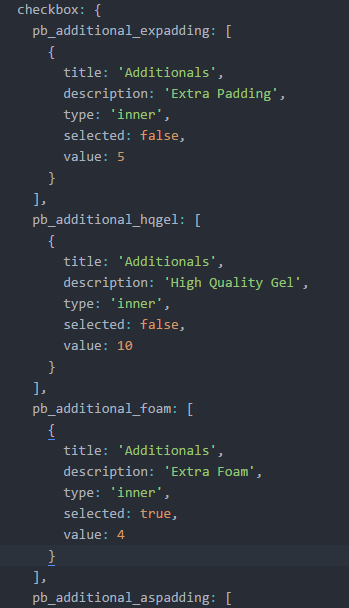

Slider
API
- slides
- controls
- selectedControlClass
- autoSlide
- autoSlideTimeout
- speed
- easing
- mode
- currentIndex
- onChangeSlide
slides: the class of the container of the slides. Default: slides
controls: the class of the container of the controls. Default: controls
selectedControlClass: the class to be applied to the current selected control. Default: selected
autoSlide: controls if the slides should automatically play. Default: true
autoSlideTimeout: controls the time (in milliseconds) between each slide when autoSlide is set to true. Default: 3000
speed: the speed (in milliseconds) at which the slides move when animated. Default: 600
easing: the easing of the animation. Default: ease-in-out
mode: the direction of the slides. Available options are 'horizontal' and 'vertical' Default: vertical
currentIndex: the index of the selected slide, starts from 0. This option shouldn't be overwritten, it's meant to be used with the onChangeSlide callback to get information from the slider and do something based on it. Check usage example in the image above.
onChangeSlide: callback function that is called each time the slide changes. Check usage example in the image above. Default: function () {}
Builder
How it Works
The builder functionality is implemented through 3 modular services that interact with each other. These services are:
builderService: stores the original price of the product and its responsible for updating both the displayed image color and the total price and displayed image stickers of the product when notified by the colorpickerService and the formService respectively.
colorpickerService: sets the default color of the displayed image and listens to click events on the colorpicker, changing the selected color accordingly and notifying the builderService of the color change.
formService: allows the registration of select, radio, checkbox and quantity inputs and listens to change events on each one, calculating the total price of the extras and notifying the builderService of the price change. Also allows to print the details of all the selected options for an overview of the purchase.
All of the above services support a restart function that allows the user to fallback to defaults.
Builder Service
API
- product.imageSelector
- product.imageSrc
- product.imageSrc.path
- product.imageSrc.name
- product.imageSrc.extension
- product.priceSelector
- product.price
- product.sticker
- product.color
- restart
product.imageSelector: selector of the container of the image to be displayed. Default: .product-builder-img
product.imageSrc: object that contains all the information needed to fetch the image.
product.imageSrc.path: relative path to the image from the directory that contains the html. Default: img/builder/products/
product.imageSrc.name: name of the image file. This property will be set via the colorpickerService and the formService and shouldn't be set by the user Default: ''
product.imageSrc.extension: extension of the image file. Default: .png
product.priceSelector: selector of the container that will display the total price of the product. Default: .product-builder-total
product.price: original price of the product. Default: 0
product.sticker: current sticker of the image. This property will be set via the formService and shouldn't be set by the user Default: ''
product.color: current color of the image. This property will be set via the colorpickerService and shouldn't be set by the user Default: ''
restart: method that fallbacks to default configuration when called.
Colorpicker Service
API
- config.containerSelector
- config.colorSelector
- config.checkMarkSelector
- config.selectedColor
- builder
- restart
config.containerSelector: selector of the container of the colorpicker. Default: .product-builder-colorpicker
config.colorSelector: selector of the container that will be clicked to change the color. Default: .c-color
config.checkMarkSelector: selector of the container of the checkmark that will be displayed on color selection. Default: .check
config.selectedColor: current selected color. Default: ''
builder: builderService to be notified when color changes.
restart: method that fallbacks to default configuration when called.
Form Service
API
- config.quantity
- config.pricing
- config.stickers
- builder
- restart
config.quantity: object that contains the id of the quantity input (refer to the "Counter" functionality for details on what the quantity input is), a changeSelector for the elements that trigger a change on the quantity input value, and the initial value to assign to the quantity input. Refer to the image below for configuration examples.
config.pricing: objects that contain an id based array options of the corresponding input. The objects supported are 'select', 'checkbox', and 'radio'. Refer to the image below for configuration examples. You should put all the inputs that change the product price here.

config.stickers: objects that contain an id based array options of the corresponding input. The objects supported are 'select'. Refer to the image below for configuration examples. You should put all the inputs that change the product stickers here.
builder: builderService to be notified when input values change.
restart: method that fallbacks to default configuration when called.
Restarting the builder
How to do it
This can be achieved by simply calling the restart methods on each service, the restart button currently implemented calls the following function on click:
Putting it all together
How to do it
You can check the product-builder.js and product-builder-v2.js files for examples on how to use the services. For production environment it is recommended that the services are put in a separate file and reused by just specifying the configuration.
Below is a usage and initialization example of the builder, colorpicker and form services.